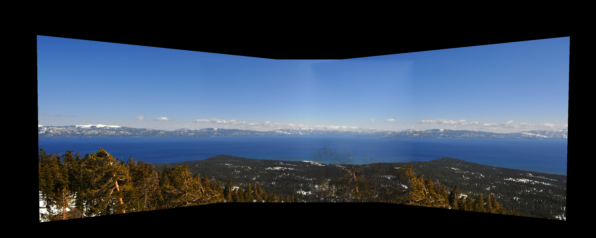
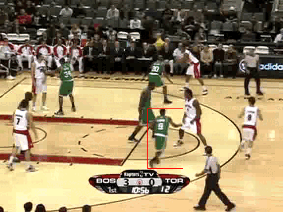

Culpa
Culpa is Columbia University’s student-run anonymous professor and course review site with more than 10,000 users per month.

Automated detection of breast cancer metastases
Trained Keras Inception V3 image classification model to detect breast cancer metastases in a lymph node section image.

Image stitching
Used SIFT to detect matching features across images and computed homographies to stitch images.

Motion tracking
Used color histograms weighted with the Epanechnikov kernel to track the motion of an object with contant size.
© Sungbin Kim.